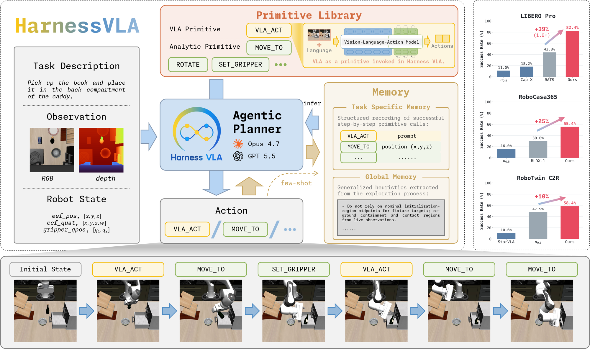

Harness VLA
把冻结 VLA 当成局部接触技能；外层 Agent 负责把机器人带到合适状态，再决定何时调用。
Harness VLA: Steering Frozen VLAs into Reliable Manipulation Primitives via Memory-Guided Agents
v4 表 3 的 8 个 LIBERO-Pro 条件平均：相同 π₀.₅ 检查点直接运行 50.0%，Harness VLA（CC）82.4%。
01这篇要解决什么？
一个 VLA 可能很会在熟悉状态下抓取，却会在目标换位置或指令换对象后回到训练习惯。Harness VLA 保留策略权重，将它封装成短程调用，并让外层代理结合解析控制、当前观测和历史记忆决定执行顺序。
02先看一个场景
一台 LIBERO-Pro 上的机械臂，指令被改写成把黑碗放到木托盘上，而画面和标准任务看起来差不多。一个在标准变体上很强的冻结策略，很容易照训练时的习惯去够原来那个目标。重新训练它不在选项里——问题是能不能不动权重就让它做对。
03方法怎样运转？

- 01
冻结 VLA 被暴露成一条可调用原语
策略权重一律不动，只通过 vla_act 这一个 JSON 调用对外开放：规划器给它一条任务相关的提示、一个 chunk 预算和一个早停谓词，冻结策略就持续输出 action chunk，直到谓词满足或预算耗尽。谓词可以是抓稳抬起、某个接触状态、基准的完成信号，或者单纯的 chunk 上限。各基准换的只是背后的检查点，接口不变：LIBERO 与 LIBERO-Pro 用 RLinf 发布的 pi05_libero130_fullshot（π₀.₅-SFT，论文记作 πRLinf），RoboCasa365 用官方 RLDX-1，RoboTwin C2R 用作者自己后训练的 LingBot-VLA。
- 02
其余动作交给不需要训练数据的解析原语
同一个词表里还有六条确定性的解析原语：move_to 与 move_pose 接受世界系笛卡尔目标、交给环境自带的求解器，rotate_wrist 与 rotate_pitch 在保持位置的前提下给腕部设定点，set_gripper 与 release 管夹爪；RoboCasa365 另加 navigate_to 与 move_base 两条底盘原语用于厨房尺度的摆位。它们由机器人运动学写死，负责自由空间搬运、预接触摆位、转向、退让与接触后重新摆位，vla_act 只留给抓取、受约束放置、按键、开关抽屉与插入这类接触密集的局部阶段。词表在评测前固定，规划器不能发明新原语。
- 03
规划器只在文件化的 REPL 里出手
规划器有两种后端——Codex 与 Claude Code，除后端外 harness、记忆接口、原语库、VLA 接口与评测协议完全相同。它把一次决策写成 command.json，长驻的环境 worker 读走、在仿真里执行到该原语的内部后置条件，再写回带序号的观测文件、诊断日志与同步标志；规划器等这些文件出现才选下一条原语，因此每一次物理动作后面都跟着一次观测与判断。它拿不到仿真器特权状态与物体真值坐标，语义靠 RGB 图像，度量靠共对齐的深度图与本体状态。
- 04
两种记忆存的东西不一样
bootstrapping 阶段在一个参考实例上放开 reset 与时间预算，让规划器反复试不同的摆位顺序、预接触位姿、vla_act 的调用时机与早停阈值。做成之后写两份东西：任务记忆是一条 JSONL 过程轨迹加一份 JSON 语义摘要，轨迹按顺序记下发过哪些原语调用，并把具体坐标换成符号化的感知查询，摘要写清策略为什么成立、要避免什么；全局记忆存跨任务的操作知识，包括成功规则（接触阶段用 VLA、抓稳后改用解析动作做长距离搬运与精确放置）与失败模型（夹爪闭合但物体没跟着末端走，按空抓处理并重新定位；不要只凭视觉接近就判完成）。失败尝试也作为负证据保留。
- 05
部署时重定位、按需重试、按谓词收尾
正式评测关掉 reset、缩短步数预算。规划器取出任务记忆的结构，用当前 RGB-D 重新绑定物体、固定件、支撑面与目标位姿，再按记忆的顺序执行，同时参照全局记忆里的规则与失败模型。接触失败不终止整段 rollout：规划器读到新观测与诊断记录后把结果归类为进展、可恢复失败或不可恢复失败，可恢复时先用解析原语把机器人重新摆到一个该 VLA 熟悉的预接触构型，再调一次 vla_act，把错误局限在当前这一段接触上。循环直到完成谓词满足或预算用尽。
memory = {task: 'JSONL 原语轨迹 + 语义摘要', global: '成功规则 + 失败模型'}
while not benchmark_predicate() and steps < budget: # 部署期禁用 reset、缩短预算
step = plan(task_text, rgbd, proprio, memory) # 无仿真真值，只有观测与记忆
if step.kind == analytic:
write_command(action=step.name, args=step.args) # move_to / rotate_* / set_gripper / release
else:
write_command(action=vla_act, prompt=step.prompt,
max_chunks=step.budget, stop=step.tau) # 冻结检查点，吐 chunk 到早停谓词
obs, log = wait_for_worker_files() # 文件化 REPL：每条原语后重新观测
outcome = classify(obs, log) # 进展 / 可恢复失败 / 不可恢复失败
if outcome == recoverable:
restage_with_analytic_primitives() # 先摆回 VLA 熟悉的预接触构型，再调一次
memory.update(trace_if_success, failure_model_otherwise)方法与结果的原文定位见本页引用。
04跟着这个场景走一遍
教学推演：回到上面的场景。第一步，vla_act 背后是冻结的 πRLinf 检查点，它在标准变体上很强，但对任务描述的条件很弱——直接跑容易照训练时的习惯去够原来那个目标，论文的终止帧对比图展示的正是这种情况。第二步，规划器先不碰接触：用 move_to 把末端带到黑碗上方的预接触位姿，姿态不合适就用 rotate_pitch 调，这些都由解析原语按运动学算出来，不依赖策略。第三步，规划器把一次 vla_act 调用写进 command.json，提示是抓住黑碗，附带 chunk 预算和一个抓稳并抬起的早停谓词；worker 执行完写回新的观测与日志，规划器读到夹爪已闭合、但物体位置没跟着末端走。第四步，全局记忆里正好有一条失败模型说这种情况按空抓处理、要重新定位再重试；任务记忆里则存着这一任务的原语顺序骨架，且坐标是符号化的感知查询而不是参考场景的数值，可以直接拿到新布局上重新绑定。第五步，规划器从当前 RGB-D 重新定位黑碗，用解析原语把机器人摆回可接触的构型，再调一次 vla_act；抓稳之后，搬运与释放交还给 move_to 和 release，最后按基准的完成谓词收尾，而不是凭画面上碗看着到位就宣布成功。整个过程里策略参数一次没动，变的只是它被放在什么状态下起步、以及被允许试几次；反过来说，如果某个接触阶段本身超出这个冻结策略的能力，重新摆位与重试并不能把它补上。
05实验到底表现怎样？
引用 v4 完整表格。LIBERO-Pro 的 8 个条件每个 10 项任务 × 10 个 seed，共 800 次；RoboCasa365 为 50 项任务共 340 次；RoboTwin C2R 为 50 项任务 × 5 seed。含参考 seed 记忆探索，因此主结果并非完全无经验的零样本。
作者报告的实验结果 · v4
| 相应表格的总体成功率 | 直接冻结策略 | Harness VLA |
|---|---|---|
| LIBERO-Pro · 表 3 | πRLinf 同检查点：50.0% | CC 82.4%；Codex 72.1% |
| RoboCasa365 · 表 4 | RLDX-1：30.0% | Codex 57.1%；CC 48.6% |
| RoboTwin C2R · 表 6 | LingBot-VLA：50.4% | CC 58.4%；Codex 58.0% |
原始证据：原语、闭环与记忆：§2 ↗ · v4 主结果：表 3–6 ↗ · 调用预算分析：图 4 ↗ · 参考 seed 与评测数量：附录 C ↗
收益随任务和 Agent 后端变化。RoboCasa 的 Codex 版从 30.0% 到 57.1%，是表中可直接核对的 27.1 个百分点；但未见组合任务只有 13.8%，不能将总体 57.1% 解释为所有新长任务的表现。
06收益来自哪里，又停在哪里？
消融与机制证据
表 5 去掉任务专属记忆，在 Goal-T / Goal-S 上分别为 79% / 31%；这揭示两类扰动难度不同。图 4 随 VLA 调用预算增加的成功曲线，支持多次局部调用有用，但还应和等预算重试对照。
结论的适用边界
模型来源要分三层看：接触侧是冻结的 VLA 检查点，其中 LIBERO 系列用 RLinf 发布的 π₀.₅-SFT 检查点、RoboCasa365 用官方 RLDX-1，都是现成权重，只有 RoboTwin C2R 的 LingBot-VLA 由作者后训练（训完同样冻结，直接对比的基线用的也是它）；规划侧是现成的 coding agent（Codex 或 Claude Code），不为机器人做任何训练；解析原语由运动学写死，不需要训练数据。属于作者的前提成本主要是这套 harness 工程：原语词表、文件化 REPL、两级记忆与重试策略。系统增加了感知、解析控制、Agent 推理和记忆，收益不能全算作 VLA 自身变强。主结果还走的是 few-shot 协议：每个任务先在一个参考实例上 bootstrap 并写入任务记忆，评测才在新 seed 上进行，因此不是完全无经验的零样本。v4 表 3 中 CaP-X / RATs 只覆盖 6 个条件，直接比较其总体与 Harness 的 8 条件总体会改变任务集合。
07放回二十篇的脉络
与 RoboHarness 共同看“策略输入状态”的问题。前者强调一组固定原语与冻结 VLA 的分工；后者强调多个异构策略的选择和交接。
08把阅读变成一个小研究
固定策略与总步数，对比直接运行、固定次数重试、先重新定位再短时调用；把有 / 无参考记忆作为另一条轴。
先自己回答：这项实验怎样才有解释力？
若重新定位后的收益仍高于等预算重试，才更支持状态准备的作用。记录 VLA 调用次数和解析控制步数，避免预算差异掩盖解释。
- 用自己的话说出这篇改变了哪个模块。
- 画出它的输入、输出和一次失败如何被处理。
- 复述一个结果，同时说清基线、指标与实验条件。这一问不给答案，材料在第 05 节。
先自己答，再看前两问的参考答案
这篇改了哪个模块改的是一个冻结策略被调用的方式与时机，而不是策略本身。VLA 权重一律不动，各基准换的只是背后的检查点；规划器是现成的 coding agent，不为机器人做任何训练；解析原语由运动学写死，不需要训练数据；成败仍按基准自己的完成谓词判。新增的是外面那层 harness：把冻结策略收成 vla_act 这一条带提示、chunk 预算与早停谓词的调用，只用在抓取、受约束放置、开关抽屉、插入这类接触密集的局部阶段，自由空间搬运与预接触摆位交给固定词表里的解析原语，再让每一次物理动作后面跟一次观测与判断。与 ASPIRE 沉淀修复知识不同，这里被沉淀与复用的是“在什么状态下起步、什么时候把控制权交给策略”。
输入、输出与一次失败如何被处理输入是任务文本、当前 RGB 图像（负责语义）与共对齐的深度图和本体状态（负责度量），加上两份内容不同的记忆：任务记忆是一条 JSONL 过程轨迹与一份 JSON 语义摘要，轨迹按顺序记下发过哪些原语调用、并把具体坐标换成符号化的感知查询；全局记忆存跨任务的成功规则与失败模型。仿真器特权状态与物体真值坐标被明确禁止，规划器看不到它们。输出是一次写进 command.json 的原语调用——要么是 move_to、rotate_pitch、set_gripper、release 这类解析原语，要么是一次带提示、chunk 预算与早停谓词的 vla_act；长驻的环境 worker 读走它、在仿真里执行到该原语的内部后置条件，再写回带序号的观测文件、诊断日志与同步标志，规划器等这些文件出现才选下一条，部署时 reset 关闭、步数预算缩短。失败由规划器发现，依据就是 worker 写回的新观测与诊断记录：它把结果归类为进展、可恢复失败或不可恢复失败，例如读到夹爪已闭合而物体位置没跟着末端走，全局记忆里的失败模型要求按空抓处理、重新定位再重试。判为可恢复时整段 rollout 不终止，规划器先用解析原语把机器人重新摆到该 VLA 熟悉的预接触构型，再调一次 vla_act，把错误局限在当前这一段接触上，循环直到完成谓词满足或预算用尽。
把冻结 VLA 当成局部接触技能；外层 Agent 负责把机器人带到合适状态，再决定何时调用。
↗带着位置回到原文
首发日期用于时间排序；以下方法与结果对应 v4。数据为论文作者报告，本讲义没有独立复现实验。
QA就这一页提问或讨论
对某个数字、某条边界或某个推演有疑问，欢迎直接留言：讨论按页面分开，回复会保留在 XinrunXu/agentic-robotics-20-papers 的 Discussions 里，需要一个 GitHub 账号。